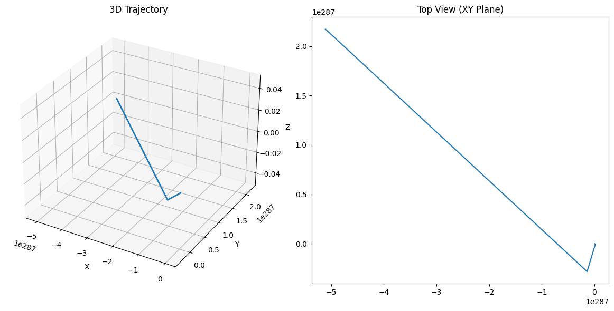

🌪️ Lorentz Force Simulator: See Charged Particles Dance! 🌪️
(No scary math - just cool visuals and simple explanations!)
🔍 What is Lorentz Force?
It's the push/pull on charged particles in electric (⚡) and magnetic (🧲) fields.
Formula (for nerds):
F = q(E + v × B)
(But we'll focus on what it DOES, not the math!)
🚀 Where This Matters in Real Life
| Application | How Lorentz Force Helps |
|---|---|
| Particle Accelerators 🌀 | Keeps particles moving in perfect circles |
| Mass Spectrometers 🔍 | Separates atoms by mass/charge ratio |
| Fusion Reactors ☀️ | Traps super-hot plasma with magnetic fields |
💻 Let's Simulate It! (Python Code)
(Try changing the numbers to see what happens!)
import numpy as np
import matplotlib.pyplot as plt
from mpl_toolkits.mplot3d import Axes3D
# Set up fields and particle
q = 1.6e-19 # Charge (Coulombs)
m = 9.1e-31 # Mass (kg)
B = np.array([0, 0, 1.0]) # Magnetic field (Tesla) → along Z-axis
E = np.array([0.1, 0, 0]) # Electric field (V/m) → along X-axis
v = np.array([1.0, 0, 0]) # Initial velocity (m/s)
# Time settings
dt = 1e-10 # Time step (seconds)
steps = 1000
positions = np.zeros((steps, 3))
# Simulation loop
for i in range(1, steps):
F = q * (E + np.cross(v, B)) # Lorentz Force!
a = F / m # Acceleration
v += a * dt
positions[i] = positions[i-1] + v * dt
# Plotting
fig = plt.figure(figsize=(12, 6))
ax = fig.add_subplot(121, projection='3d')
ax.plot(*positions.T, lw=2)
ax.set_title("3D Trajectory")
ax.set_xlabel("X"); ax.set_ylabel("Y"); ax.set_zlabel("Z")
ax2 = fig.add_subplot(122)
ax2.plot(positions[:,0], positions[:,1])
ax2.set_title("Top View (XY Plane)")
plt.tight_layout()
plt.show()
🌀 What You'll See

- Pure Magnetic Field (B only):
- Particle spirals 🌀 in a perfect helix
-
(Like a rollercoaster with no end!)
-
Electric + Magnetic (E ⊥ B):
- Particle drifts sideways ➡️ while spinning
-
(Like a car drifting while doing donuts!)
-
Change Parameters:
- Stronger B = Tighter spiral
- Stronger E = Faster drift
🎮 Play With These Settings!
# TRY THESE CHANGES:
B = [0, 0, 2.0] # Stronger magnet → tighter turns
E = [0.5, 0, 0] # Stronger electric field → faster drift
v = [0, 2.0, 1.0] # Different starting speed → wilder path
💡 Key Physics Without the Jargon
- Larmor Radius: How "wide" the spiral is (Bigger B → smaller radius)
- Drift Velocity: How fast it moves sideways (E×B direction)
🚀 Where To Go Next
- Add gravity → See how particles fall while spinning!
- Try non-uniform fields → Crazy unpredictable paths!
- Simulate multiple particles → Like a mini particle accelerator!
Want it simpler? Just ask! 😊
(Pro tip: Run this in Jupyter Notebook for interactive tweaking!)